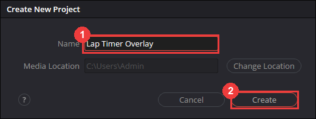
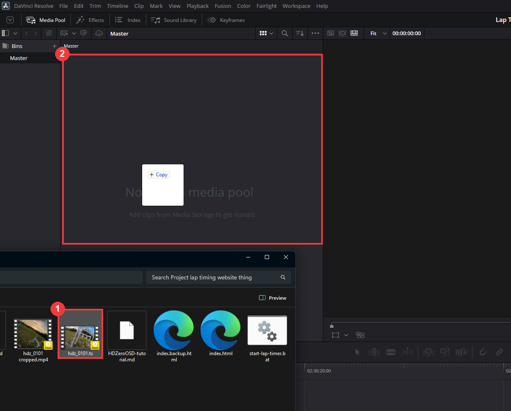
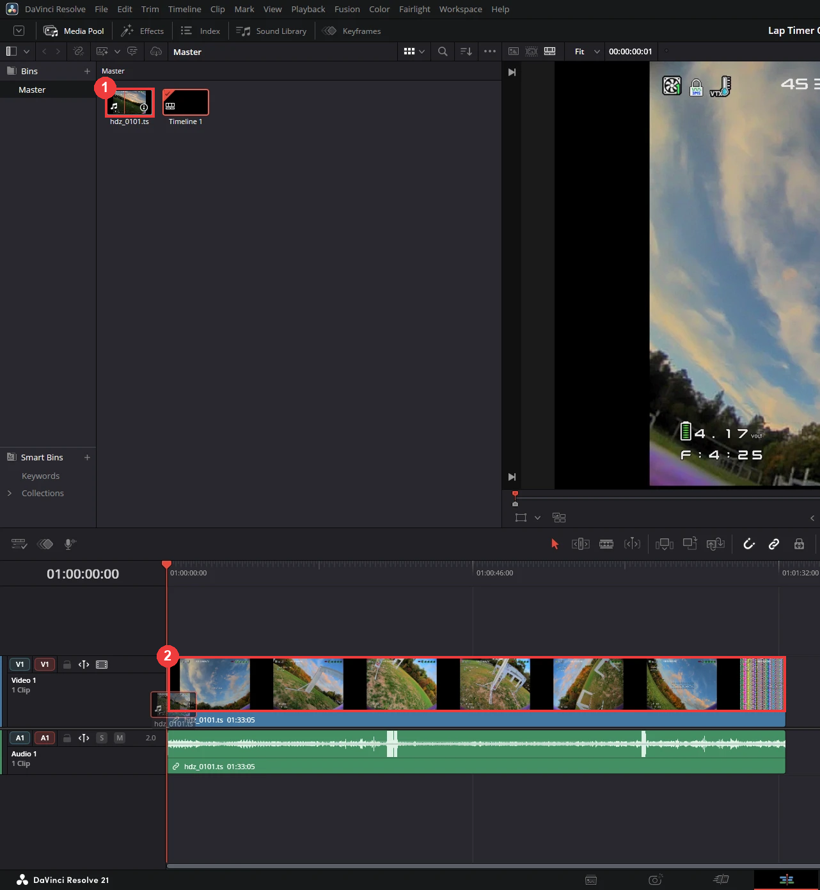
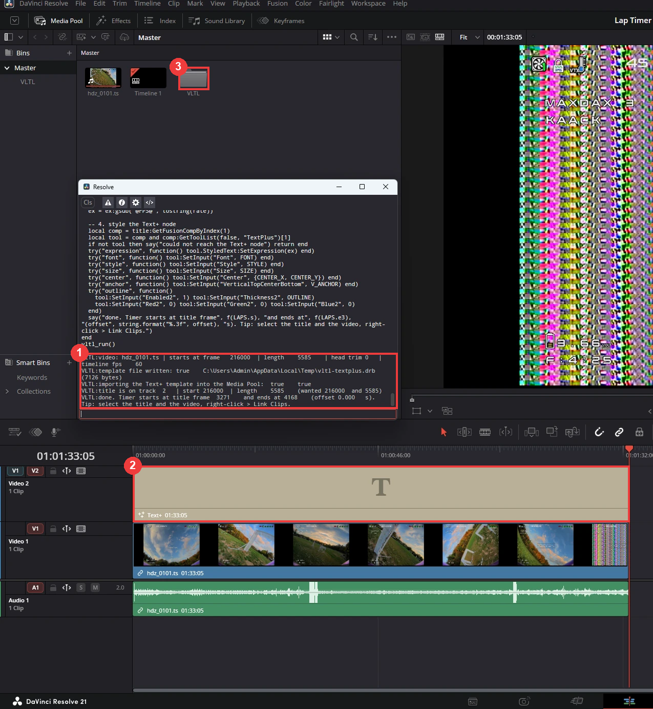

Lap timer overlay for DaVinci Resolve
Put live lap times on your HDZero footage. You mark your laps in the lap timer, copy one script, and paste it into Resolve. It works in the free version of DaVinci Resolve. Click any picture to enlarge it.
1Install the HDZero OSD font
Do this first, so the font is in Resolve's list later. The goggle OSD is drawn from a bitmap, not a normal font, so Resolve has nothing like it. This font is that bitmap converted to a real .ttf: wide, rounded-square letters and digits that are all the same width, so the numbers do not jitter as they count.
Install
- Download the file with the green button.
- Windows: right-click the file → Install for all users.
- Mac: double-click the file → Install Font.
- If DaVinci Resolve is open, close it and start it again. Resolve only reads the font list at start.
- That is all. The script in step 3 picks the font HDZero OSD by itself.
What is in it
Digits, capital letters A–Z (lowercase shows as capitals, like the OSD), and . : - + / % & ( ) ! ? , ; = < > @ [ ] \ ^ _ #. No arrows or battery symbols. It is a pixel font: scaled up a lot it looks blocky, like the OSD itself. It has no black edge, which is why the script adds a black outline.
The shapes come from the HDZero goggle firmware font BTFL_000.bmp (hd-zero/hdzero-goggle, MIT license). This is an unofficial conversion, not made or endorsed by HDZero.
2Project and video
2.1Create a project

- Start Resolve, double-click New Project and type a name, for example
Lap Timer Overlay. - Click Create.
2.2Add your video to the Media Pool

- Drag your video file from its folder.
- Drop it into the Media Pool.
2.3Put your video on the timeline

- On the Edit page the clip now sits in the Media Pool. Drag it from there...
- ...into the empty timeline. Resolve creates the timeline for you, and your video is on track V1.
.ts files import fine. If Resolve cannot read yours, convert it to MP4 first with the ts2mp4 converter (ffmpeg scripts for converting, upscaling and cropping .ts files).3Copy the script and run it
3.1Copy it from the lap timer
First mark your laps in the lap timer until it shows your best 3 consecutive laps, with the same video file that is in Resolve.

- Click Copy Resolve script. The script now holds your best 3 laps.
- Font: the page uses HDZero OSD when it is installed on your computer (step 1). If it is not, it starts with Open Sans. You can type any font name or pick one from the list. Load my fonts lists the fonts installed on this computer (Chrome and Edge ask once for permission). The font must be installed on the computer that runs Resolve.
- Optional: Dashes per character is the length of the dashed line under the total.
1fits the HDZero OSD font, about1.5fits normal fonts. It changes to 1 or 1.5 when you change the font, and you can set it by hand.
3.2Paste it into Resolve's console
- In Resolve, open your project and make sure the timeline with your video on V1 is open (Edit page).
- Press F6 (or open the menu Workspace → Console). A small console window opens.
- Click into the line at the bottom of the console, press Ctrl+V and then Enter. (If the console has a language button, choose Lua.)
- The console prints lines that start with
VLTL:. The last one says done. The timer is now on V2 above your video.
3.3Check the result

- The console prints lines that start with
VLTL:. The last one says done. - The timer is on V2, over the whole video.
- The very first time, the script also adds a small Text+ template to your Media Pool (a bin called VLTL). You do not need to touch it.
3.4What the script does for you
- Reads your timeline frame rate and finds your video on V1 (by file name, or the clip under the playhead).
- Adds the timer on V2 with the same start and length as your video. It also works if the start of the clip is trimmed.
- Sets the font you chose, the size, the position in the top right, and a black outline.
- Fills in the timer so it counts the best 3 laps live and freezes each lap at its exact time.
The look it sets (if you want to change it afterwards)
You can change any of these in the Inspector: click the timer on V2, then the Title tab.
| Where | Setting | Value |
|---|---|---|
| Text tab | Font | the font you chose on the page (HDZero OSD, Regular by default) |
| Text tab | Size | 0.025 |
| Text tab | V Anchor | -1 (top: the lines grow downwards and the first line stays put) |
| Layout tab | Center X / Y | 0.78 / 0.844 |
| Shading tab, element 2 | Enabled, outline, black | Thickness 0.06 |
4Result
Back on the Edit page, move the playhead over your best 3 laps. The counters count up live, freeze when each lap ends, and show the 3-lap total on top.

- Total of the 3 laps, a dashed line, then lap 1, lap 2 and lap 3 (frozen at their exact times).
This is how it looks with 1 dash per character:
5Trim and edit your video
When the timer looks right, you can cut and trim as much as you like. Link the video and the timer first, so they stay lined up (the timers count from the start of the timer clip).
- In the timeline, select the timer clip on V2 and your video clip.
- Right-click one of them → Link Clips (shortcut Ctrl+Alt+L). A tick next to it means they are linked.
- Now trim, cut and move the clips as much as you want. The video and the timer move together, so the timers stay in step with the video.
If something looks wrong
- The console shows an error, or nothing happens: open your project and the timeline first, then paste again. Check that you copied the whole script.
- "Could not tell which clip on V1 is your video": your video must be on track V1. Put the playhead on it and run the script again. It also helps when the video in the lap timer has the same file name as the clip in Resolve.
- "Could not add the template": add it by hand once. On the Edit page open Effects → Titles, drag Text+ into the Media Pool, rename it
VLTL_TextPlus, and run the script again. - The font looks wrong or is missing: the font has to be installed on the computer that runs Resolve. For HDZero OSD, install it as in step 1 and restart Resolve. Resolve only reads its font list at start. If you typed a font name, check the spelling.
- I ran it twice and now there are two timers: every run adds a new title on V2. Delete the extra one.
- The timers start at the wrong moment: the marks come from the video loaded in the lap timer. Make sure it is the same file as in Resolve, check the lap marks, then copy and run the script again (after deleting the old timer).
- The dashed line is too long or too short: change Dashes per character in the lap timer, copy the script again, and delete the old timer first.